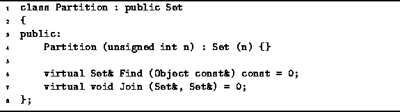

Data Structures and Algorithms
with Object-Oriented Design Patterns in C++
Data Structures and Algorithms
with Object-Oriented Design Patterns in C++
Program  declares the abstract class Partition.
Since a partition is a set of sets,
it makes sense to use a class derived from the abstract base class Set
defined in Section .
The two member functions, Find and Join,
correspond to the partition operations described above.
declares the abstract class Partition.
Since a partition is a set of sets,
it makes sense to use a class derived from the abstract base class Set
defined in Section .
The two member functions, Find and Join,
correspond to the partition operations described above.

Program: Partition Class Definition
The elements of a partition are also sets. Consequently, the objects contained in a Partition are also derived from the Set class. The Find member function of the Partition class expects as its argument a reference to a Set::Element and returns a reference to the Set which contains the specified element.
The Join member function takes two arguments, both of them references to Set instances. The two arguments are expected to be distinct elements of the partition. The effect of the Join operation is to remove the specified sets from the partition and replace them with a Set which represents the union of the two.
 Copyright © 1997 by Bruno R. Preiss, P.Eng. All rights reserved.
Copyright © 1997 by Bruno R. Preiss, P.Eng. All rights reserved.